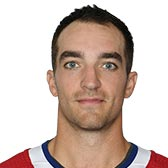

CANADIENS
| Photo |
Name |
Number |
Position |
Shot |
Height |
Weight |
Birthday |
Hometown |
|  |
Kenny Agostino |
47 |
LW |
L |
6' 0" |
199 |
Apr 30, 1992 |
Morristown, NJ, USA |
|
Joel Armia |
40 |
RW |
R |
6' 4" |
210 |
May 31, 1993 |
Pori, FIN |
|
Paul Byron |
41 |
LW |
L |
5' 9" |
163 |
Apr 27, 1989 |
Ottawa, ON, CAN |
|
Michael Chaput |
43 |
C |
L |
6' 2" |
199 |
Apr 09, 1992 |
Ile Bizard, QC, CAN |
|
Phillip Danault |
24 |
C |
L |
6' 1" |
198 |
Feb 24, 1993 |
Victoriaville, QC, CAN |
|
Nicolas Deslauriers |
20 |
LW |
L |
6' 1" |
221 |
Feb 22, 1991 |
LaSalle, QC, CAN |
|
Max Domi |
13 |
LW |
L |
5' 10" |
193 |
Mar 2, 1995 |
Winnipeg, MB, CAN |
|
Jonathan Drouin |
92 |
C |
L |
6' 0" |
193 |
Mar 28, 1995 |
Ste-Agathe, QC, CAN |
|
Brendan Gallagher |
11 |
RW |
R |
5' 9" |
184 |
May 6, 1992 |
Edmonton, AB, CAN |
|
Charles Hudon |
54 |
LW |
L |
5' 10" |
196 |
Jun 23, 1994 |
Alma, QC, CAN |
|
Jesperi Kotkaniemi |
15 |
C |
L |
6' 2" |
184 |
Jul 6, 2000 |
Pori, FIN |
|
Artturi Lehkonen |
62 |
LW |
L |
6' 0" |
177 |
Jul 4, 1995 |
Piikkio, FIN |
 |
Matthew Peca |
63 |
C |
L |
5' 9" |
182 |
Apr 27, 1993 |
Petawawa, ON, CAN |
|
Andrew Shaw |
65 |
RW |
R |
5' 11" |
182 |
Jul 20, 1991 |
Belleville, ON, CAN |
|
Tomas Tatar |
90 |
LW |
L |
5' 10" |
182 |
Dec 1, 1990 |
Ilava, SVK |
| Photo |
Name |
Number |
Shot |
Height |
Weight |
Birthday |
Hometown |
|
Karl Alzner |
27 |
L |
6' 3" |
219 |
Sep 24, 1988 |
Burnaby, BC, CAN |
|
Jordie Benn |
8 |
L |
6' 2" |
199 |
Jul 26, 1987 |
Victoria, BC, CAN |
|
Brett Kulak |
17 |
L |
6' 2" |
187 |
Jan 06, 1994 |
Edmonton, AB, CAN |
|
Victor Mete |
53 |
L |
5' 9" |
183 |
Jun 7, 1998 |
Woodbridge, ON, CAN |
|
Jeff Petry |
26 |
R |
6' 3" |
197 |
Dec 9, 1987 |
Ann Arbor, MI, USA |
|
Mike Reilly |
28 |
L |
6' 1" |
195 |
Jul 13, 1993 |
Chicago, IL, USA |
|
Shea Weber |
6 |
R |
6' 4" |
229 |
Aug 14, 1985 |
Sicamous, BC, CAN |
| Photo |
Name |
Number |
Height |
Weight |
Birthday |
Hometown |
|
Antti Niemi |
37 |
6' 2" |
209 |
Aug 29, 1983 |
Vantaa, FIN |
|
Carey Price |
31 |
6' 3" |
215 |
Aug 16, 1987 |
Anahim Lake, BC, CAN |